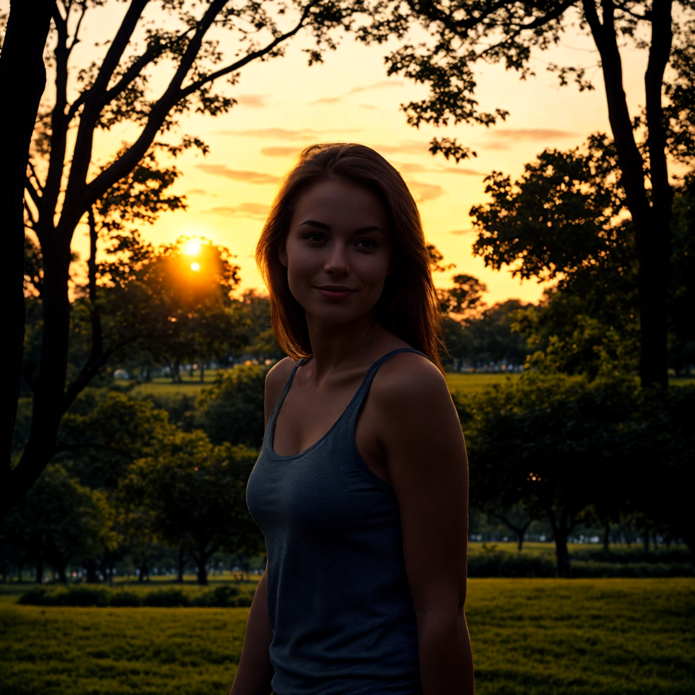

නැවත ආලෝකය ලබාදීමේ විශේෂාංගය භාවිතා කිරීමට මාර්ගෝපදේශය
AiCasso හි නැවත ආලෝකය ලබාදීමේ විශේෂාංගය ඉතා අලංකාරයි! ඔබට ඔබේ රූප වල ආලෝකය කිහිපයක් පදවියෙන් වෙනස් කිරීමට ඉඩ සලසයි. ඔබට පසුබැසීමේදී හෝ පැත්තකින් මෘදු ආලෝකයක් අවශ්යද? කිසිදු ගැටළුවක් නැහැ! එය විස්තර කරන්න, AiCasso ඉතිරි කටයුතු කරනු ඇත.
මෙය කෙසේ ක්රියා කරයි:
ආදාන රූපය:
භාවිතා කළ ප්රේරණය:
"සූර්යයා පසුබැසීමේදී ඇති කරන්න"
ප්රතිඵලය:

විකල්ප සංශෝධන
ඔබට අභියෝගයක් දැනෙන්නේ නම් සහ ඔබේ නැවත ආලෝකය ලබාදීමට තවත් සුන්දරත්වයක් එක් කිරීමට අවශ්ය නම්, මෙන්න ඔබට සංශෝධනය කළ හැකි කිහිපයක්:
- ආපසු ප්රේරණය: කුමක් හෝ වළක්වා ගැනීමට අවශ්යද? ඔබට AiCasso ට කුමක් නො ඇතුළත් කිරීමට කියන්න පුළුවන්. නමුත් කණගාටු නොවන්න, ඔබ මෙය හිස් තබා ගන්නවා නම්, AiCasso ඔබට අවශ්ය දේ මත පමණක් අවධානය යොමු කරනු ඇත.
- ආලෝකය දිශාව: ආලෝකය කුමන දිශාවෙන් පැමිණිය යුතුද යන්න ඔබට විශේෂිත කළ හැක—වම, දකුණ, ඉහළ, පහළ, හෝ කිසිවක් නැත. සාමාන්යයෙන්, ආලෝකය වමෙන් පැමිණේ.
- මාර්ගෝපදේශය මට්ටම: මෙය AiCasso ට ඔබේ විස්තරය අනුගමනය කිරීමට උපකාරී වේ. මට්ටම 1 සිට 20 දක්වා යයි, 7 සාමාන්යය. අංකය වැඩි වුවහොත්, AiCasso ඔබේ ප්රේරණයට වැඩි අවධානය යොමු කරයි.
- උසස්-විශාලිතා මට්ටම: ඔබේ රූපය ප්රබල වීමට අවශ්යද? මෙය පැහැදිලිත්වය පාලනය කරයි. සාමාන්යය 1.5 වේ, නමුත් ඔබට 1.0 සිට 2.0 දක්වා සකස් කළ හැක.
- ශබ්දය අඩු කිරීමේ මට්ටම්: අඩු-විශාලිතා සහ උසස්-විශාලිතා යන මට්ටම් දෙකක් ඇත. මෙම මට්ටම් අවසන් රූපය කෙසේද යන්න පාලනය කරයි. ඔබට අඩු-විශාලිතා ශබ්දය අඩු කිරීමේ මට්ටම 0.0 සහ 1.0 අතර සකස් කළ හැක (සාමාන්යය 0.9) සහ උසස්-විශාලිතා 0.0 සහ 1.0 අතර (සාමාන්යය 0.5).
- පියවර ගණන: මෙය AiCasso ඔබේ රූපය පිරිසිදු කිරීමට ගන්නා පියවර ගණනයි. සාමාන්යය 50 වේ, නමුත් ඔබට 20 සිට 50 පියවර ගත හැක.
අමතක නොකරන්න, මෙම සංශෝධන සම්පූර්ණයෙන්ම විකල්ප වේ! AiCasso ඔබට අවශ්ය දේ සොයා ගැනීමට ඉතා හොඳයි, එබැවින් ඔබේ දැක්ම ඔබේම වචන වලින් විස්තර කරන්න, එය මායාකාරී කටයුතු කරනු ඇත. වාක්ය රීති හෝ විශේෂාංග සම්පූර්ණ කිරීමට අවශ්ය නැහැ—ඉතා සතුටු වන්න සහ ඔබට නිර්මාණය කළ හැකි දේ බලන්න!